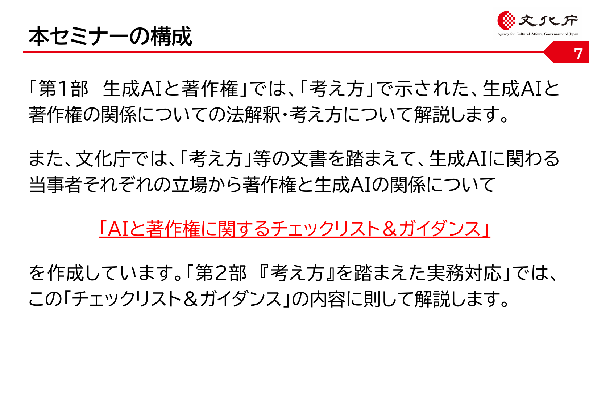
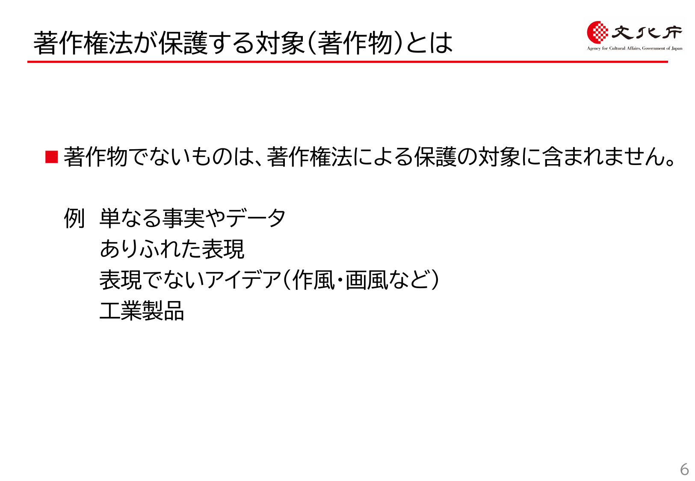
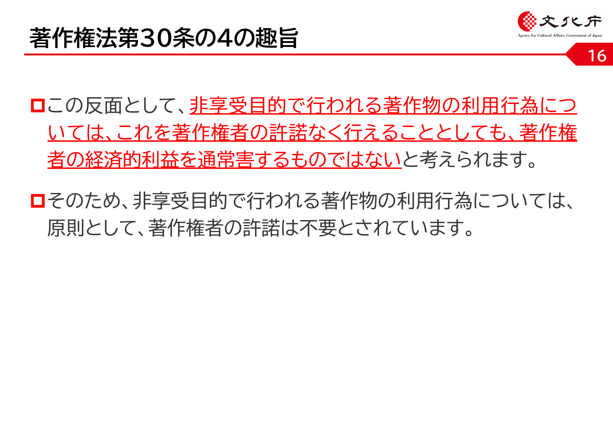
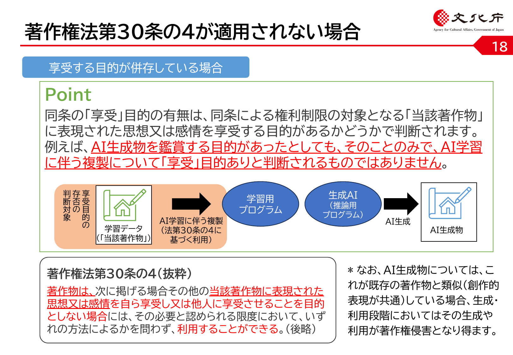
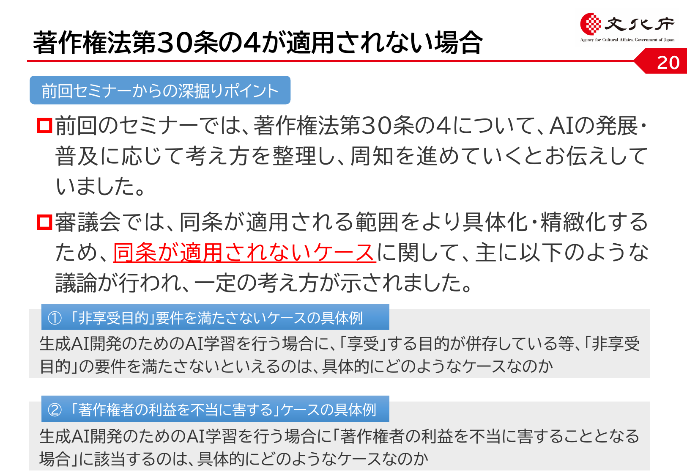
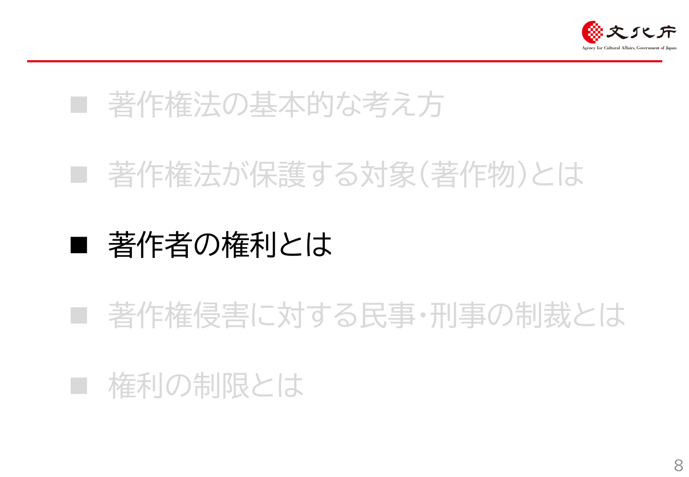
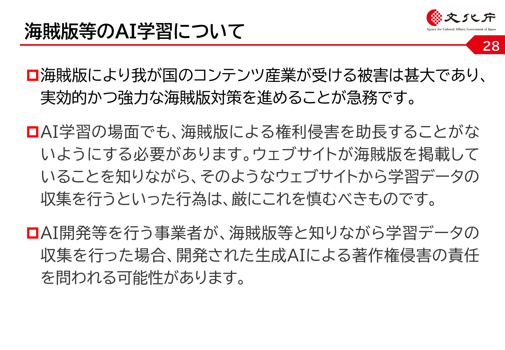

京都芸術デザイン専門学校 クリエイティブデザイン学科 キャラクターデザインコース
今日はこの「使い方」の手前にある ルール の話
AIで一瞬で絵が出せる時代になっても、 出した人が責任を持つ 構造は変わらない
すべてあなたの判断、あなたの責任
実際に起きていること
ルールを 知らない ことそのものがリスクになる
著作権・パクリの問題は、AI登場のずっと前からある 人間が描いた絵でも 同じことが起きる
このあと、最近の2つの実例を見ながら考える
人気漫画家の 告知ポスター（中央線文化祭2025／ルミネ） が、 SNSの一般女性の写真を 本人に無許可で 参考にしていたことが発覚
「トレースは絵を描く上での正当な段階のひとつ」（江口氏） 一方で「知らないところで自分に似た絵が描かれて 不安になる人もいる。配慮が足らなかった」とも
参考：J-CASTニュース／ITmedia NEWS／オリコン（2025年12月）
「人が描いた」イラストでも、依拠性＋類似性 が認められれば 著作権・肖像権・パブリシティ権の問題になる
AI以前から、著作権の物差しは 同じ 「依拠性」「類似性」は今日この後ずっと出てくるキーワード
「銀座今昔きもの大市」の告知ポスターで、 AI生成のフリー素材を使ったところ 着物が 左前（亡くなった方の着付け＝死装束）に
参考：J-CAST「着物イベントの『左前』ポスターが物議」（2023年4月）
法律上の 著作権侵害ではない が、炎上リスクは法律と別 に存在する
「AIに作らせた」では言い訳にならない 出した人が責任を負うのは、絵でも文章でも同じ
「あれもダメ、これもダメ」を覚える時間ではない
「どこまでなら自由に動けるか」を確認する時間
ラインがわかれば、その手前では大胆に動ける わからないと、何をしても怖い
そして、これは AIだけの新しい問題ではない これまでの著作権・パクリ問題の 延長線上 にある
そして... AI時代だから新しくできたルールではなく、 昔からあるルールがAIにも当てはまる
「思想又は感情を 創作的に表現 したものであつて、 文芸、学術、美術又は音楽の範囲に属するもの」 （著作権法 第2条第1項第1号）
ポイントは3つ
出典：文化庁「AIと著作権Ⅱ」p.5
「〇〇先生の 画風 で」というプロンプト自体は、 画風＝アイデアの領域なので 画風そのもの は保護されない ただし「特定作品にそっくり」になると話は別（後述）

ひとつの作品の中にも、保護される部分とされない部分 がある
出典：文化庁「AIと著作権Ⅱ」p.23
なぜアイデアは保護されないのか？
アイデアと表現の 境目 は、ケースごとに判断 「ここまではアイデア／ここからは表現」が 難しいケースも多い

出典：文化庁「AIと著作権Ⅱ」p.7
両方そろうと、著作権侵害の可能性が高い

出典：文化庁「AIと著作権Ⅱ」p.32

「似てる気がする」だけでは決まらない 創作的表現が共通している かが分かれ目
出典：文化庁「AIと著作権Ⅱ」p.34
文化庁の整理（AIの場合）

出典：文化庁「AIと著作権Ⅱ」p.36
「似てる／似てない」だけでは決まらない 江口寿史事件 はまさに右下の領域に入った疑いをかけられた
AIを使う流れには、それぞれ別のリスクがある

出典：文化庁「AIと著作権Ⅱ」p.9
「AIで作った」だけでまとめて議論しない
情報解析等に伴う著作物の利用＝ 「著作物に表現された 思想又は感情の享受を目的としない 利用」 は、原則として 著作権者の許諾なく 行うことができる
つまり
他人のイラストを入力して「これに似たものを」と生成する行為
クリエイター感情・大衆感情として認められないケースは多い SNSで 炎上するリスク は法律とは別に存在する
着物・左前ポスター事件 はこのパターン （著作権侵害ではないが、ブランドは傷ついた）
大ファンの漫画家さんの絵柄が大好き。 プロンプトに「〇〇先生風で」と書いて オリジナルキャラを生成。Xに投稿した。
判定とその理由は？
既存アニメのキャラクター画像をAIに読み込ませて 「同じポーズで、別キャラに置き換えて」と指示。 出てきた画像を友達にLINEで送った。
友達の顔写真を本人に無許可で 「アニメ風に変換」してSNSに投稿。 「めっちゃ可愛くなったよ」とタグ付き。
卒業制作の自分のイラストの背景に、 AIで生成した街並みを合成して提出。 AI使用については特に明記しなかった。
「今期アニメっぽい雰囲気の女の子」と AIに大量の設定案を出させ、その中から選び、 自分の手でゼロから絵を描いて 投稿した。
「商用利用OK・著作権フリー素材だけで学習」と うたっているAIサービスで画像を生成し、 グッズにして販売した。
任意で発表してください
判定そのものより、「判断の言葉」を共有することが目的
ここまでは「何を出すか」の話だった
実は、入力する側にも大きなリスクがある
「入力＝外部に渡している」と考えるのが安全
主要サービスには データを学習に使わない設定 がある
ただし...
著作権侵害を避けるための実務ルール
公開する前に、画像検索などで 既存作品と似ていないか チェック
「Image to Image」などで 他人のイラスト を入力し それに似たものを生成させない
「真似する意図はなかった」と説明できるように 生成に使った指示文 を残しておく
日本の現在のおおまかな考え方（2026年時点）

出典：文化庁「AIと著作権Ⅱ」p.44
人間が どれだけ手をかけたか
この授業で学ぶワークフロー＝創作的寄与を増やす ことでもある
サービスごとに 利用規約で決まる
「とりあえず売ってみた」が一番危ない
最近の動き：「これはAI製ですよ」を 見えない形で埋め込む 技術
透かしを 意図的に外すのは禁止行為 とされていることが多い 「AIで作ったことを隠す」目的の加工は危険
「AI使用」を明示するかどうか
隠して使ってバレる のが一番ダメージが大きい どこに出すかで、出し方を変える
観点の例（全部書かなくてよい、迷ったらここから選ぶ）
■ 私のAI活用ガイドライン v1 1. クライアントから預かった素材は、無料版AIに入れない 2. 「〇〇先生風」など特定のクリエイター名はプロンプトに書かない 3. SNS投稿時、AI生成画像には #AIart を必ずつける 4. 授業課題でAIを使った場合、レポートに使用範囲を明記する 5. 迷ったら、提出前に先生か友達に相談する
スプレッドシートに記入してください
「人が描いた」「AIが描いた」を問わず、 出した人が 責任を引き受ける ところは同じ
A. 既存作品をまったく見たことがない人が、偶然似たものを描いた B. 既存作品を参考にしながら描いて、見た目もそっくりだった C. 既存作品の「アイデア」だけ借りて、表現はまったく違う
A. クライアントから預かった未公開の設定資料 B. 自分が考えた架空のキャラ設定（公開予定なし） C. 友達の本名と住所と顔写真
A. AIが出した瞬間に、必ず制作者の著作物として保護される B. AIが出しただけのものは権利が認められにくく、人間の創作的寄与があるほど認められやすい C. AIで作ったものはすべて著作権が一切発生しない
A. ある漫画家が描いた具体的なキャラクターの絵 B. その漫画家の 画風そのもの C. その漫画家の作品を載せた単行本のレイアウト
A. 生成スピードが落ちる B. 入力したことが 依拠性 の証拠となり、似た出力を公開すれば著作権侵害になりうる C. AIが画像を理解できず、何も生成されない
本日のスライド中の図版（フローチャート、グラデーション図、フロー全体図ほか）は 文化庁「AIと著作権Ⅱ」資料からの引用です